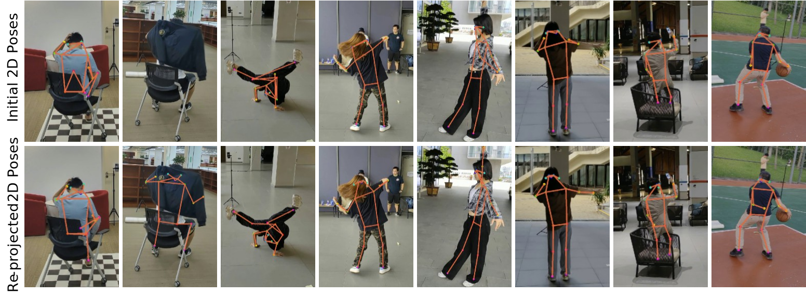

Get started with FreeMan and explore data! Scenes examples, actor statistics, 2D pose comparison, motion blur visualization, and SMPL visualization.
Example of Data Collection Environment
We collect data using 8 smart phones and all are attached to a tripods to keep stable. All cameras are positioned in a circle and the image shows the case for camera calibration before data collection.
Example of Data Collection Environment

Scenes
FreeMan are collected in real scenes, consisting of 10 types of real scenarios and 27 locations. Here shows 1 example of each type of scenes.
Cafe

Carridor
Courtyard

Dance Room
Library

Lobby

Park

Platform

Sport Court

Square
HMR Cross-Domain Test
To examine generalization ability of FreeMan and its counterpart datasets, we trained HMR on Human3.6M, HuMMan and FreeMan, respectively. Here shows cross-domain test on 3DPW test set of HMR trained on Human3.6M, HuMMan and FreeMan, respectively. Results obtained by visualization tools in mmHuman3D. Location and actions in 3DPW are shown below each example.

Flat

Outdoor

Courtyard

Outdoor
Subject Statistics
Statistics of subjects in FreeMan are shown below, covering gender, height, weight and age.

Gender

Height

Weight
Age
Action Sets
Here shows overview of action sets in corresponding scenes. Block size represents corresponding frame number. Click here for interactive visualization.

Occlusions
This part shows some examples of occlusions in FreeMan. Occlusions are categorized into self-occlusion and object-occlusion.

Self-Occlusion
Object-Occlusion
Self-Occlusion
Object-Occlusion
Self-Occlusion
Object Occlusion
Self-Occlusion
Object Occlusion
Illumination
Here shows some examples of illumination in FreeMan.
Phasellus Viverra
Phasellus Viverra
Phasellus Viverra
Phasellus Viverra
Phasellus Viverra
Phasellus Viverra
Phasellus Viverra
Phasellus Viverra
Effect of Re-projecting 3D pose
To alleviate the effect of occlusion, we re-project 3D pose to 2D pose and compare the 2D pose before/after re-projection. Here shows the comparison of 2D pose annotation before/after re-projection.
Comparison of 2D pose annotation before/after re-projection
SMPL Annotation
With 3D keypoints obtained by multi-view triangulation, we fit SMPL into the 3D keypoints and obtain SMPL parameters. Here shows some examples of SMPL annotation in FreeMan.


Credits: Great thanks to awesome works related.
Datasets: Human3.6M, HuMMan, 3DPW
Codebase: mmHuman3D